PRZEZUCIE
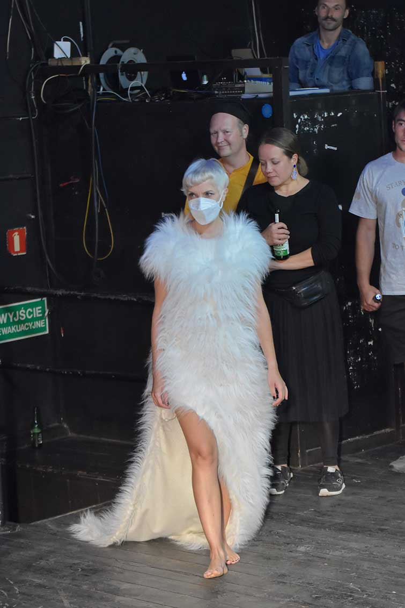
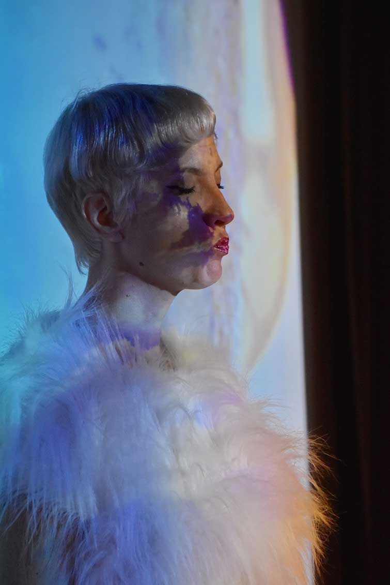
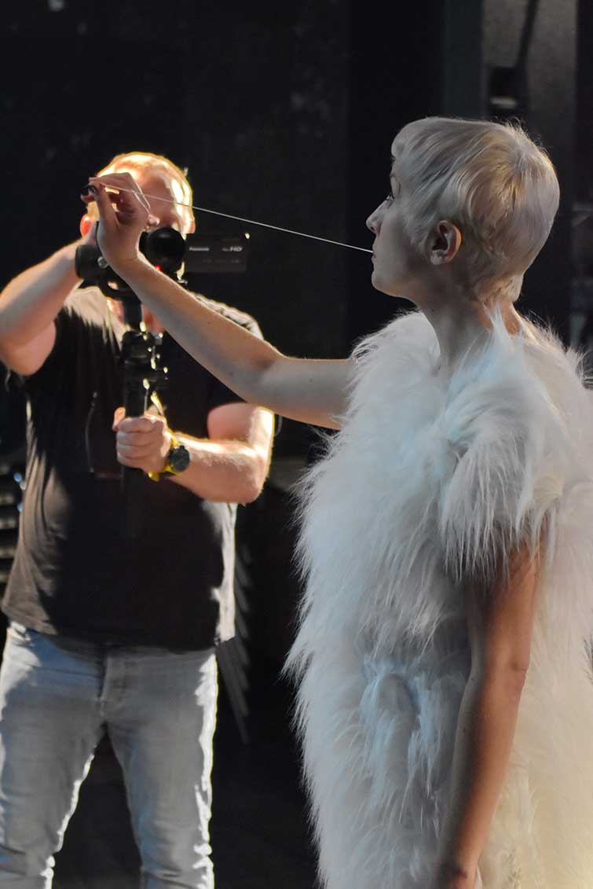
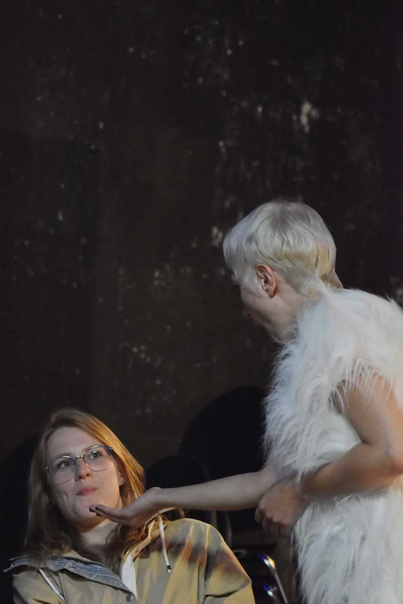
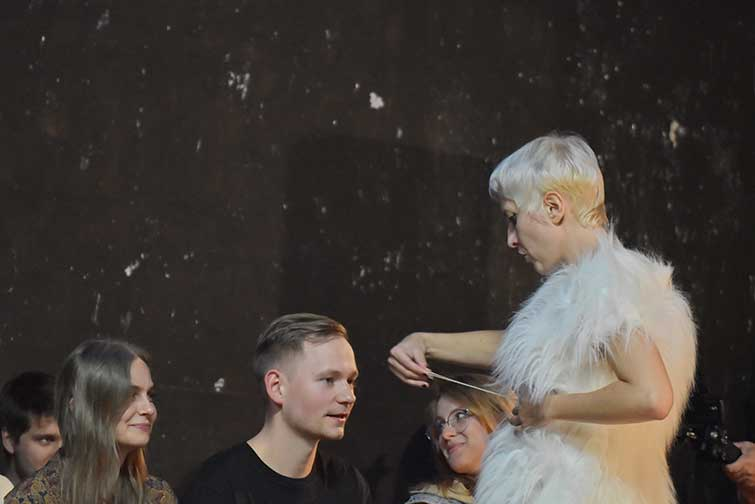
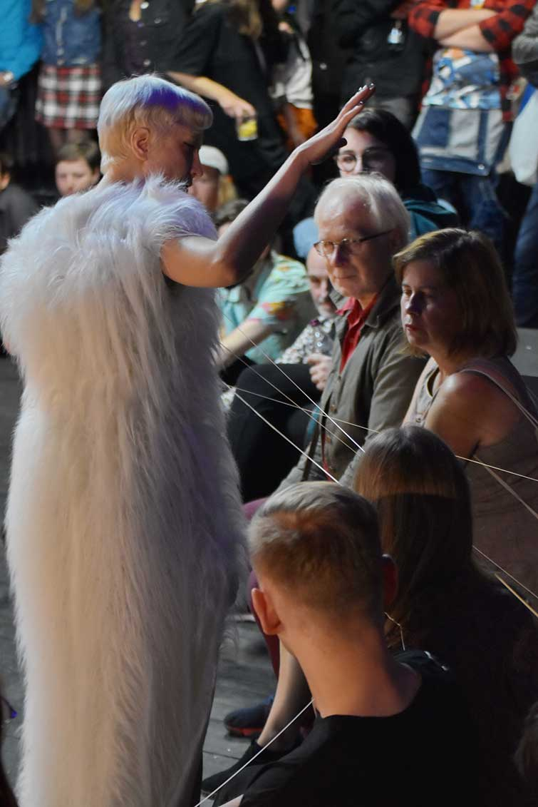
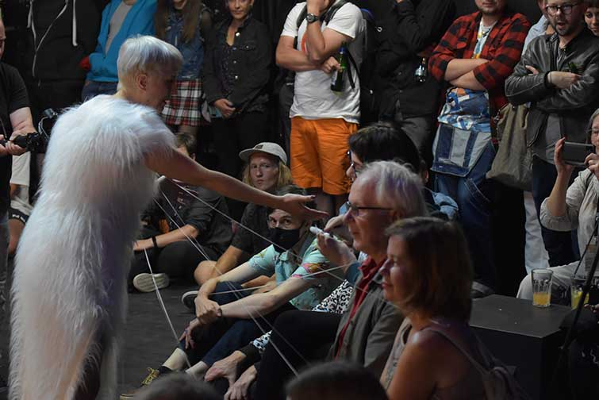
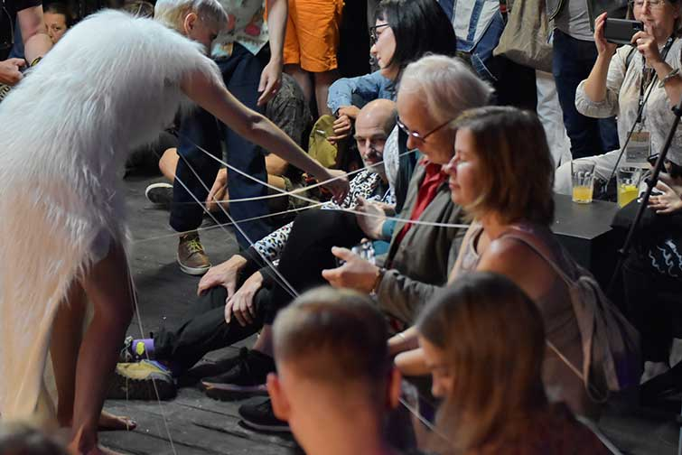
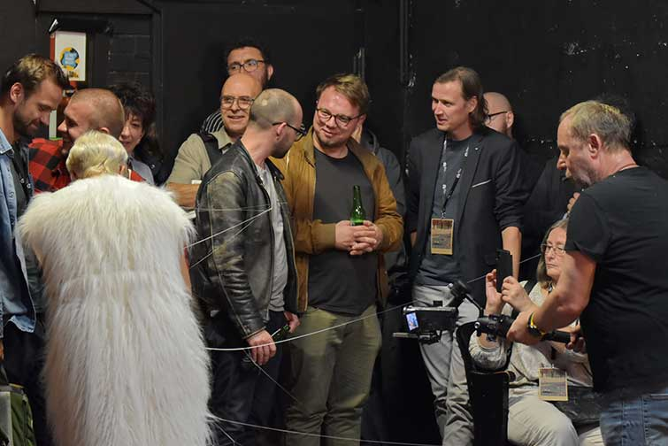
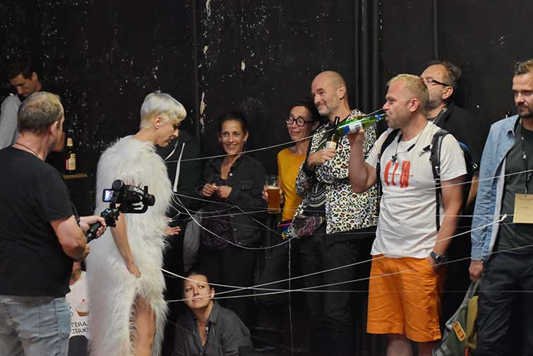
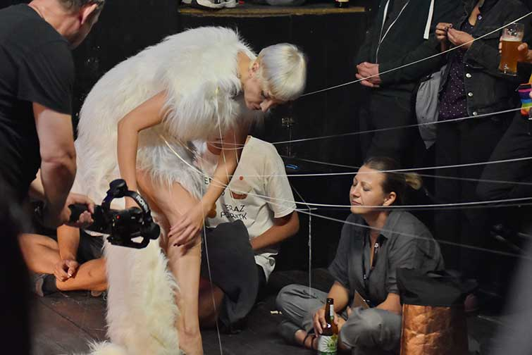
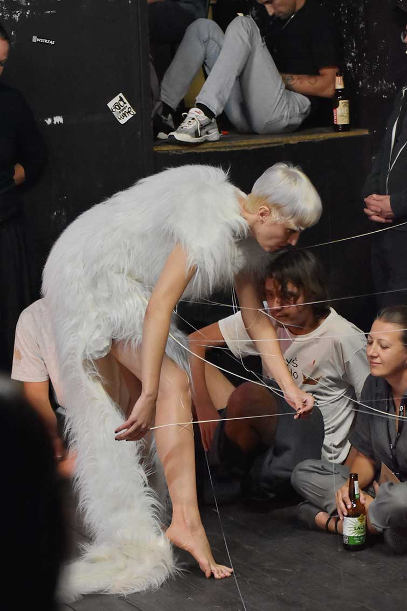
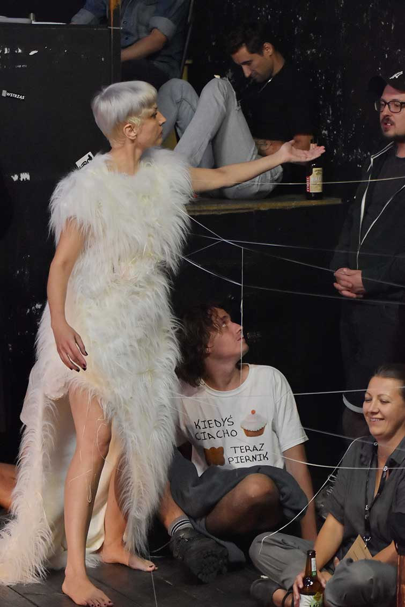
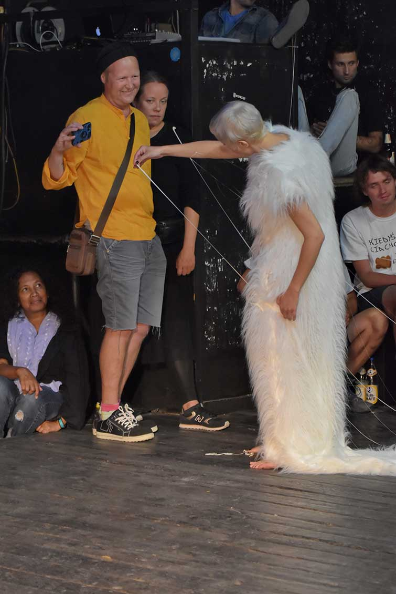
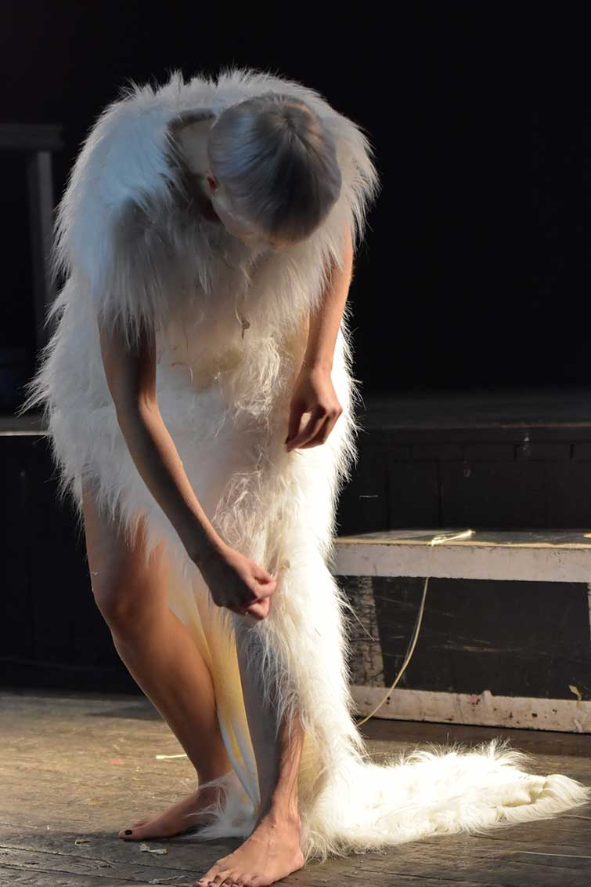
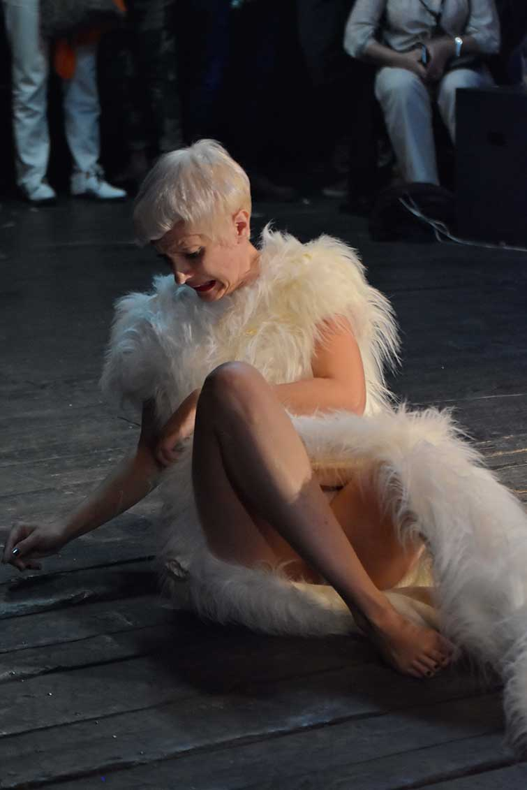
performance PRZEZUCIE odbyla sie na 17th MOZG Festival w Bydgoszczy jako pierwsza czesc dyptyku "Wszystko jest polaczone".
Dzialanie rozpoczynalo sie na 17th Mozg Festiwal w Bydgoszczy a konczylo na 7th Festival of naked forms w Pradze. Do obu performance uzylam tej samej sukienki uszytej z futra.
Tak jak skonczylam pierwszy performance tak rozpoczelam drugi.
performance trwal okolo 30min.
foto: Krzysztof Pawlowski
kamery: Dariusz Gackowski, Leszek Cieplinski